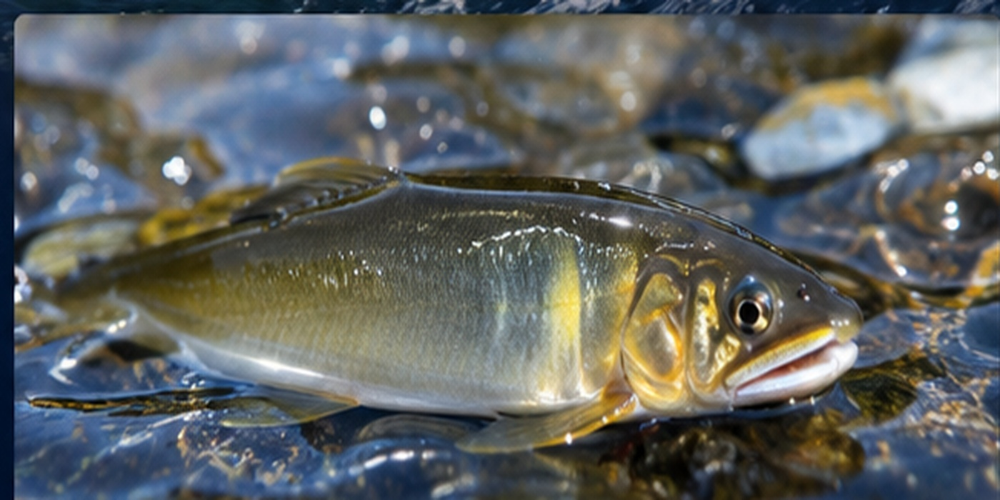

自然との一体感
腰まで清流に入り、足元の石と水圧を感じながら川の一部になる時間。
THE CHARM OF TOMOZURI
友釣りは、鮎の縄張り意識を利用する、日本独自の伝統的な釣法です。
オトリ鮎を自然な流れへ送り込み、縄張りを守る野鮎が体当たりした瞬間に掛けます。目に見えない水中の動きを想像しながら、竿先と糸から伝わる小さな変化を読み取る。静けさの中に、強烈な駆け引きがあります。
川の流れ、石の形、水温、鮎の動き。毎日変わる自然を相手にするから、同じ一日は二度とありません。

腰まで清流に入り、足元の石と水圧を感じながら川の一部になる時間。
流れの筋を読み、オトリの動きを操り、野鮎との一瞬の勝負を待つ。
竿、糸、オトリを一体にする操作。小さな工夫が釣果を大きく変える。
竿が満月のように曲がり、掛かった鮎が水面を割る瞬間の高揚感。
HOW TO FISH
「流れを見る」「オトリを自然に泳がせる」「掛かる瞬間を待つ」。
友釣りは、力よりも観察と丁寧な操作が大切です。
STEP 01
鮎が縄張りを持ちやすい石の周辺、流れの筋、白く磨かれた石などを観察します。安全に立てる場所を選ぶことも大切です。
最初は流れが強すぎず、足場の安定した場所から始めます。
ESSENTIAL GEAR
長さを活かしてオトリを繊細に操作する。
水中糸、鼻カン、掛け針をバランスよく組む。
掛かった鮎を受け止め、素早く交換する。
鮎タイツ、シューズ、ベルト、救命具を備える。
JINZŪ RIVER, TOYAMA
富山の街を流れる神通川。広い空、立山連峰から届く水、瀬を走る白い流れ。
都市の近くにありながら、川へ一歩入れば、そこには鮎と向き合う濃密な時間があります。
SAFETY FIRST
入川前に天候・水位・遊漁規則を確認し、必要な遊漁券を準備します。滑りにくい装備と救命具を使用し、増水時や無理な渡河は避けましょう。